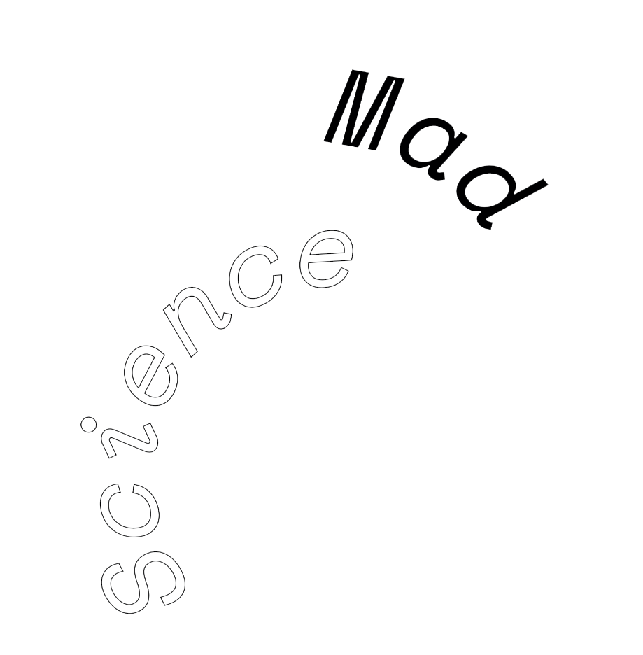
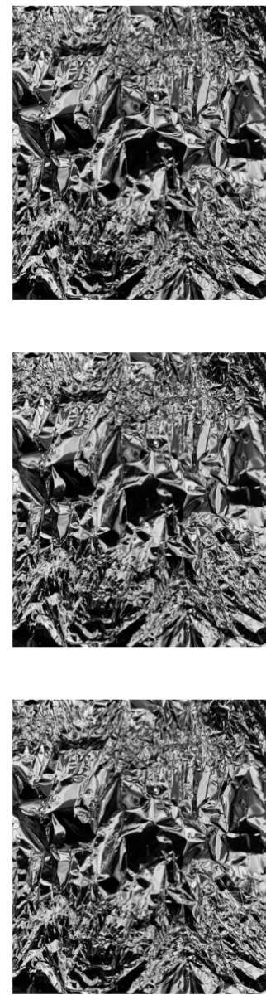

Read More


Read More
MAKE magazine celebrates and challenges the concept of a literary magazine as a finished product by placing every piece of poetry, fiction, nonfiction, and interview that we publish within a wider dialogue that continues outside its pages, across artistic disciplines and languages.
About

The theme Mad Science came about as we thought about how important it was to capture in language the beauty of scientific phenomena, whether it be about self-centered protists, a neuron firing off in the cerebellum, or a writer from these very pages typing out his work on a computer.
$13
Shop
Previews
¿no te sentirás solita (algunos preguntarán) al quedarte a solas con solo tus cosechas, solo tus playas para visitar, solo tus montañas para subir en carro hasta que la carretera sea precipicio con una madera fina de papel de regalo, amarrada con un lazo de pluma de gallina, con firma de perro sato? ¿no extrañarás los sonidos que entran filtrados por otros mundos, la algarabía del descubrimiento constante torcido para formar los blasones, tu esperanza con casco, siempre en el campo de batalla, siempre a la defensiva? ¿no te abandonarán tus dioses? ¿tus hijos, no cruzarán mares correteando hacia el pecho de aquella nación mayor? ¿no te negarán la alegría como bienes en el puerto? ¿no te castigarán por manifestar aquel sueño? ¿no volverán con más ejércitos, pistolas más grandes, estrategias más densas, nuevas elecciones, radiaciones, chupacabras para tus vacas, especies extrañas que te comerán cruda? ¿tus celulares captarán sólo la devastación, plagas esparciendo tu cáscara seca? seguramente las minas viequenses despertarán dentro de los volcanes inactivos donde peces raros ponen huevos venenosos. pondrás en peligro a todos tus viejos amantes, quienes, buscándote desesperados en un mundo reorganizado, accidentalmente tocarán la puerta errada y morirán. ¿no morirás? ¿tu muerte no será como un nuevo planeta vaciado de todo aquello por lo cual luchaste? te llamarán terrorista. un día no regresarás y todos se enteraran de que en el cuerpo tenías demasiada independencia. ¿no lo romperás? ¿no arruinarás las aguas? (algunos preguntarán) ¿cómo sabes si funcionará? ¿cómo te puedes asegurar que no acabará con lo poco que tenemos, los cupones que hemos ahorrado, los apartamentos apestillados donde guardamos viejos marcos, récores de los trabajos que perdimos, la gente que perdimos a la jeringuilla o a los sótanos de ciudades lejanas? aquí tienes un matrés que usamos hace quince años y guarda la historia de nuestra resistencia. esto se lo llevará tu empeño en salvarnos. mira lo que nos dieron: estas promesas interminables que algún día quizás se cumplan. sin ellas, ¿no se sentirá el vacío? ¿no se sentirá como si todo lo que tenemos son latas almacenadas y una tierra que no sirve gracias a todos los fuegos? tendremos que luchar y sabes que tras la lucha no nos queda lucha. ellos enviarán nuevas naciones para matarnos y entonces, ¿qué ofrecerás? ¿tu bandera y tu orgullo? ¿no quedarás relegado al olvido? ¿tus restos no se hundirán en la tierra como huesos de taíno? no botes a los buenos colonizadores con la poca agua de lluvia que recolectaste. no es su culpa que beban de un pozo llano para luego volver a sus casas con piscinas y sus cabañas frente al lago. ellos también necesitan, como nosotros. ellos también. ¿no te resultaría mejor visitar a tu cura, ir a terapia de pareja, trabajar juntos para arreglar la relación? ¿no confías en que mejorarán las cosas? mira a todas las naciones modelo en sus filas largas, por lo menos tienen aire acondicionado en el daco imperial. ¿no te perseguirá esta decisión? asegúrate que quieres hacer esto. nos queda poco. ¿por qué te atas a cosas imposibles? siempre será diferente de lo que te imaginas. ¿y quién dirá que será mejor? ¿cómo estás segura? ¿no te arrepentirás? ¿no desearás tener jefe? ¿no te sentirás inquieta con tanta libertad?
won’t it be lonely
(some may ask)
to have only your crops growing,
only your beaches to visit,
only your mountains to drive up
until the road is a cliff
with thin wood wrapping,
tied with chicken feather bow,
with a scribbled stray dog name?
won’t you miss the sounds that filter through
from other worlds,
the clanking of being discovered,
constantly bent into crests,
your helmeted hope
forever afield, forever on guard?
won’t your gods leave you?
won’t your children scamper across oceans
into the bosom of that older nation?
won’t your joys be withheld like goods in the port?
won’t you be punished for the dream
you chose to manifest?
won’t they come back with more armies,
bigger guns,
denser strategies,
new elections,
radiations,
chupacabras for your cows,
strange species that eat you raw?
won’t your phones only capture devastation,
plagues littering your dried hull?
surely the mines in vieques will all awaken
in the once-dormant volcanoes where strange fish
laid venomous eggs.
you’ll endanger all your old lovers,
who, desperately trying to find you
in a rearranged world,
will accidentally knock on the wrong door
and die.
won’t you die?
won’t your death look like a new planet
emptied of all you fought for?
they’ll call you a terrorist.
you’ll never return one day and everyone will know
there was too much independence in you.
won’t you break it?
won’t it ruin the waters?
(some will ask)
how do you know it will work?
how can you be sure it won’t just
take down the little we have,
the coupons we’ve saved,
the cramped apartments where we store
old frames, records of jobs we’ve lost,
people we lost to the needle or
basements in far-off cities?
this here is a fifteen-year-old mattress
and it holds the history of our endurance.
this will be swept up in your rush to save us.
look at what we’ve been given.
these interminable promises
that may one day deliver.
without them,
won’t it be empty?
won’t it feel like all we have are stored cans
and land useless from the burnings?
we’ll have to fight
and you know after a fight
there’s no fight left.
they will send new nations to kill us
and then what will you offer?
your flag and your pride?
won’t you be forgotten?
won’t your remnants sink into the earth
like taíno bones?
don’t throw out the good colonizers
with the little rainwater you’ve gathered.
it’s not their fault they drink from a shallow well,
then head back home to pools and lake cabins.
they too need, like us.
they too.
won’t you be better off seeing your priest,
going to couples therapy,
working on this together?
don’t you trust things can get better?
look at all the model nations
in their long lines,
at least they have air conditioner
in the imperial dmv.
won’t you be haunted by this one choice?
make sure you want to do this.
we have so little to live on.
why do you cling to impossible things?
it will always be other than what you imagine
and who says that will be better?
how do you know?
won’t you be sorry?
won’t you wish you had a boss?
won’t you get restless
with all that freedom?
Raquel Salas Rivera is the 2018–19 Poet Laureate of Philadelphia. They are the first recipient of the Ambroggio Prize from the Academy of American Poets. They have authored five full-length poetry books. Their book, lo terciario/the tertiary, was on the 2018 National Book Award Longlist.
Elephant
In the movie Waterworld, the audience discovers halfway through that Kevin Costner has grown gills. Waterworld is an eponymously titled film. The world is covered by water. There is no dry land anywhere in the world. The food is fish, if you can catch it. Water comes salt-cleaned from the sky or in the form of filtered piss. There are bad guys: Smokers, who smoke cigarettes and spew smoke out of the backs of their very bad Jet Skis. There are other kinds of bad guys who strive to make new dry land with the decomposing bodies of bad men or medium-bad men and maybe also decomposing fish guts. The making of land is almost as difficult as the making of water. Boats banded together with rotting hulls pile dead bodies in tanks, hoping one day the solids will outweigh the liquids.
But it must have been a short time since the ice caps melted and the world was swallowed up, because the hulls of all the boats haven’t rusted through and Kevin Costner still manages to keep a pot of lime and a pot of tomato alive on the deck of his boat and the bad guys, the Smokers, still have cigarettes and enough gasoline to power their smoke jumpers. But it also must have been a long time since everyone besides Kevin Costner has forgotten about cities. No one remembers streets and cars. No one remembers when there were other bad guys like poachers and child molesters and Cabinet members. And, most pointedly, Kevin Costner has grown gills. He has evolved. He has become part fish. That can’t happen fast, can it?
In November 2016, an article came out stating that elephants were being born without tusks. In response to the poaching of elephants to sell ivory to Asia, especially China, elephants are evolving to save themselves. A big fuck you to the poachers of the world.
Think of this world so rich in substance, so rich in solidity, that you can stand assuredly on the ground. So rich in grasses and grains of sand and deciduous trees whose leaves fall to the ground and easily compost themselves into dirt. No one needs to work on dirt-making. The Earth is so plentiful that there are elephants enough to leave behind for dead on the grassy, sandy savannah floor, the entire body of an elephant, taking nothing but its tusks. The leaves fall on the scratchy elephant skin. They decompose together. It’s the poacher carrying those heavy tusks who is alone. He sells his cut to a lonely man who sells the collection of tusks wholesale. A whole shipping container full of ivory. Two. Three. An abundance of ivory stacked on top of an abundance of shoes and lumber and lithium bound for the land most abundant with humans. Perhaps you can imagine a lonely man in that most-abundantly-peopled land looking for a way to say This part of the planet is mine. His Buddha isn’t quite the Buddha who urges mindfulness and living in the moment. This little Buddha statue carved from the great abundance of mineral, the great abundance of ivory, the great abundance of grasses and sands and deciduous trees. There’s something about taking a little bit of the world home with you in your pocket, even though you know it signals the death of everything around you. Ivory in your pocket is a talisman that says, “Not yet. It’s not over yet.” Until, of course, it’s over.
But it turns out the elephants aren’t any more in charge of their evolutionary skills than Kevin Costner with his gills or the poor boat people trying to make soil. They didn’t decide to stop being born with tusks. Evolution chose that fate. It happens every few years, when so many female elephants are hunted. The ones without tusks are the ones who survive. They go on to give birth to the next generation. Their tusk-free DNA gives way to tusk-free baby elephants. Neither intent nor timing has anything to do with it. It’s always been this way. Elephants have been getting rid of their tusks for decades. Every year, 10 percent fewer babies are born with tusks. Evolution, unlike ivory, is forever abundant.
Plasmodia
I have come late to slime mold. Some things I know:
• Slime mold is neither plant nor animal. Slime mold metamorphoses from an amoeba into something called a plasmodium, that flows across the surfaces of
• Plasmodia don’t have legs; in fact, they are one giant single-celled organism with many nuclei so they don’t have brains either, or organs of any kind.
• They move by pulsating forward and backward.
• They live on bacteria
• One famous slime mold looks so disgusting to a human eye that it is called dog’s vomit.
My mum’s friend Von, from Adelaide, has a longstanding fascination with fungi. It’s not a fascination that’s quick to spread. The fungi people are more of an underground network, like the fungi themselves.
Von says: “I like small, secret things.”
The other morning I was walking near the suburban beach at Glenelg just east of Adelaide, where Mum and Von and their friend Marg and I had been swimming, and it came up that the fungi season was about to start. Von had just been to her first “Haven’t you heard that story?” Von said when I asked how she got into fungi. “I was out camping in Tassie, and I was relieving myself in the bush in the middle of the night, as do, when I saw this thing right beside me on the ground, glowing bright green. I hightailed out of there quick smart, but in the morning I went back and found my wet patch and there beside it was an ordinary, plain-colored mushroom. Next night I went out again and it was glowing green. I was hooked!”
Some fungi are indeed , to attract insects, after dark. But fungi are amazing in many ways humans are only just discovering. Trees and fungi form symbiotic partnerships. The fungi intertwine with the tree roots, like hair extensions, and in exchange for wholesome carbohydrate energy from the trees, which the trees have extracted by photosynthesis from sunlight, the fungi reach down deep into the earth and bring back such essential minerals as nitrogen and phosphorus, which the trees need to grow big and strong. Trees use fungi to communicate with other trees, even to help take care of them when they are in need—all of this scientists have shown. Where forests used to be metaphors for individualist competition—the survival of the fittest, sapling-eat-sapling, pay-no-taxes, natural way of —they are now revealed as sophisticated networks of multispecies cooperation, surviving on give and take.
Just as I’m finally coming to realize that fungi might be the coolest organisms with the best metaphoric potential on the planet, Von says: “You know what’s really weird? Slime mold!”
Slime mold is the fungi-lover’s fungi. It is not even a fungi anymore—it has been pushed over the classificatory fence into the wild territory of protists. All I can understand so far about protists is that it is the category you go into if you are not in any of the other categories. Protists are like the + at the end of LGBTQI+, the cutting edge of organic diversity.
Slime molds are not just ugly, they are also beautiful. They metamorphose again, after being plasmodia, to the fruiting stage. This is when, like fungi (but not fungi), they suddenly produce profusions of spores, often looking like little lollipops on sticks, that blow away in the wind to live mysterious new amoebic, plasmodic, sporangic lives.
“Where do they go at the end of all that?” asks Von rhetorically, as we get off the tram. “Nobody knows,” she continues. “They disappear without a trace. We haven’t begun to understand them!” We part ways on Gilbert Street to hunker down against the heat. “Look them up,” she says. “It’ll blow your brains, I promise you!”
Scientists have discovered that, even without brains or nervous systems, slime molds are remarkably smart. Plasmodia can solve mazes, pulsating through them, investigating all the dead ends before settling on the shortest path to a food source. Other scientists have used a diet of oats and a map of Japan to coax slime mold into creating an accurate version of the Tokyo regional rail network that, on various measures, functioned roughly as effectively as the actual Tokyo regional rail network. “Overall,” they concluded, “the Physarum a.k.a. slime mold networks showed characteristics similar to those of the rail network in terms of cost, transport efficiency, and fault tolerance. However, the Physarum networks self-organized without centralized control or explicit global information by a process of selective reinforcement of preferred routes and simultaneous removal of redundant connections.”
Elsewhere, paid again with oats, slime mold ha obliged by recreating the network of the Canadian highway system
But wait, there’s more! Slime molds are also capable of learning from experience. A team of biologists in France has done experiments where they blocked the paths of slime molds with bitter and salty but harmless substances. At first the slime molds didn’t want to cross the foul-tasting coffee stain (or whatever), but once they realized after a few days that it was in fact merely unpleasant rather than dangerous they started going across anyway. December 2016, the same scientists demonstrated that slime molds can not only learn but also teach naïve slime molds what they have learned. The biologists showed slime molds that crossing a bridge of salt posed no threat, then invited the newly wise slime molds to fuse with naïve slime molds. The newly fused slime molds, it turned out, also knew the trick of crossing salty bridges. Then if the scientists separated the fused slime molds after they had been coied-up together for three hours (time enough for a vein to form at the point of fusion, as the biologists saw through their microscopes), the slime mold that had previously been the naïve one was now just as smart as the wise oneand would happily go across the bridge to oat-land on the other side.
So the moral of the story: not so smug, humans! If slime molds can do all this stuff, without even a single cell division or a smiley face, then we need to get our advanced primate shit together.
David Carlin’s latest books are The After-Normal (Rose Metal Press, 2019) and the forthcoming 100 Atmospheres: Studies in Scale and Wonder (Open Humanities Press). He is a professor at RMIT University, Australia, where he co-directs the cultural exchange program WrICE and the non/fictionLab.
Nicole Walker is the author of Sustainability: A Love Story (Ohio State University Press, 2018) and The After-Normal from (Rose Metal Press, 2019).
If I had a superpower, it’d be to experience the world for a few hours through another animal’s perspective. How do parrots, eels, a worm, or a scorpion sense the world around them? How does an armadillo feel the sun’s heat, the earth’s scent, the growling of other armadillos, the passing of time? A single day in the life of a human being is the entire adult life of a mayfly, that winged insect with twenty-four frenzied hours in which to dry off its wings, choose a partner, have sex mid-flight, lay eggs (when female), and drop dead. A dog perceives the world through its infinite complex odors, while a whale is able to call to another that’s hundreds of kilometers away.
Jakob von Uexküll, from Baltic Germany, one of the most important zoologists of the twentieth century, dedicated his life to studying animal behavior. The son of an aristocratic family in decline, Baron von Uexküll lost his fortune in the First World War and was forced to take up a teaching position at the University of Hamburg, where he developed his most influential theories. According to von Uexküll, we are used to viewing the world as a homogeneous reality that we share with animals. Yet, each animal relates to its environment in a way unique to its species: there is a world for flies, a world for iguanas, another for jaguars. Von Uexküll referred to the system of signs used by each organism to “understand” its environment as umwelt or environment-world.
“The universe is filled with glimmering soap bubbles. Each holds a world, a world fleeting and humble, or vast and lush. There is no legend, no story equal in fantasy to those living worlds,” writes von Uexküll in Biologische Briefe an eine Dame, or Biological Letters to a Lady. And: “We cannot perceive those extraneous schemas except from within our own.” We’re condemned to imagine the extraordinary lives of other living beings without being able to access them. “All that’s left for us is to lament the impossibility of painting those thousands of worlds in their own colors, of hearing their unique sounds, feeling their own particular spaces and times. We are entirely ignorant of other subjects’ sensations.”
One living being that interested von Uexküll was the tick. A tick spends its days perched on a branch waiting for the right time to pounce on an animal and suck its blood. Deaf and blind, the tick nestles into a space because of how its skin reacts to light. At first whiff of a mammal passing nearby, the tick flings itself at it: “If by luck it falls onto a thing emanating heat (which it can perceive thanks to an organ that senses temperatures), it has reached its goal, the hot-blooded animal, and then it needs only use its sense of touch to find a spot as devoid of fur as possible and burrow itself head-deep into the animal’s cutaneous tissue. Now, it can slowly slurp at a gush of hot blood.”
The tick doesn’t even enjoy the taste of blood: this mite lacks taste. All that matters is for the liquid it drinks to be the temperature of mammalian blood: after eating, it lays eggs and dies. The environment-world of the tick consists of the butyric acid scent in mammalian sweat, the temperature of blood, and the creatures’ skin type. Von Uexküll explains how a scientific lab managed to keep a tick alive for eighteen years without feeding it: during this time, he speculates, the tick would have remained in a latent state, like sleep for humans. In his book The Open, the Italian philosopher Giorgio Agamben revisits the tick anecdote in order to ask himself what happened to the tick and its world in the course of those eighteen sluggish years: if a being is defined by its relationship to its environment, what happens when it endures utterly deprived of it? In other words: What does the tick experience in those eighteen years without sustenance?
The story of the tick reminds me of the fifty-two-hertz whale. A specimen on our radars since 1989, this whale sings at a unique frequency, higher than that of other whales: maybe it suffered some malformation, or perhaps it’s a hybrid. The thing is, because of the unusual frequency at which it sings, no other whale can communicate with it. It’s possible that this creature has spent decades singing the ocean through without a single whale ever answering its call. This has led it to be christened “the loneliest whale in the world.” But maybe we’re projecting: How can we know that a whale feels loneliness in the same way humans do? Von Uexküll said it before: “Our greatest shame is that we will never know what it’s like to be another.” In any case, there’s something touching about an animal ceaselessly wandering the oceans after an answer that might never arrive.
Liliana Colanzi was born in Bolivia. She is the author of the short story books Permanent Vacations (2010) and Our Dead World (Dalkey Archive Press, 2017). She teaches Latin American Literature at Cornell University.
Julia Sanches is a literary translator of Portuguese, Spanish, Catalan, and French. She has translated books by Noemi Jaffe and is currently translating works by Geovani Martins, Daniel Galera, and Claudia Hernández.
In the morning the factory workers lined up outside for the start of the first shift, entering in fifteen-minute intervals. Workers stared at their reflection in the tall glass doors. When they opened, the workers walked in, down a hall, and gathered in a large room lined with lockers and benches. The sound system emitted a positive buzz from above.
All entries were monitored. Signs were posted.
GOOD PRACTICES MUST BE MAINTAINED
AIM FOR POSITIVE PRODUCTIVITY
WITH TEAMWORK WE ACCOMPLISH THE IMPOSSIBLE
All clothes were removed, folded, and held in a locker until shift’s end.
White suits were put on in their place and were worn in sterile areas.
Each morning a new suit was donned. Legs first, then arms, then zip, then tie.
Cover head, tuck beard, cover mouth, cover feet.
Wash hands under running water: soap, rinse, then dry.
One door closed before the next door unlocked. One door led to another and another down a corridor. Bodies moved through, entirely covered except for eyes and necks.
Hands turned switches, recorded temperatures. Moved containers filled with powders, scooped and weighed. Blue screens turned purple as the queue of products grew and soon began to blink red. Work faster! Work faster! they said. Speed first, but also accuracy.
No error is acceptable. No error is an anomaly. The factory practices are good practices. Only the finest workers, only the purest product.
Distributed to neighboring towns and villages. Inquire at your local counter, order through your online retailer.
Good practices are sober, clean, and sterile. Good practices are controlled, replicable, and assayed often. Good practices assure the chemical composition is not adulterated.
From the delivery dock came box after box. One followed another on the conveyor belt, an underground birth canal.
And so on. And on and on they went. And yet.
Ingredients came from all over: sea extractions, valley dirt, freight from foreign ships. All contents delivered were first stored in a warehouse that spanned a full acre.
The conveyor belts delivered each box to a specific destination. From there the contents were taken, unpacked, and altered.
The workers made so much, with their beakers of liquid chemical, dry ice, pulverized powders.
When the break time bell rang, a trickle of bodies exited labs through a series of lochs, the opposite way they had entered. White-clad bodies gathered in a hall with tables the size of tennis courts. Most chairs remained empty. There was never enough time to exit, rest, and return to the station.
Workers were only allowed to leave once the next shift arrived. No exceptions. These were sacrifices that had to be made. For the good of the people, for the good of the company.
Health and well-being first, they said.
Answers to all sources of inquiry were readily available, in chemical form. Manufactured and distributed widely.
There were pills for sinners and scandal-makers, pills for do-gooders and the uptight, pills against neuroses and inhibitions. There were pills for perfectionists and Type As, for the habitual B-listers and bruised egos. Pills for learning to love yourself, to accept that there’s no meaning beyond the everyday. Pills to cure loneliness, to learn to be alone, pills to stop yelling at sports games, pills to soothe, to make you want to do. Pills to finesse, to forget about otherness, to fill absence, emptiness. Pills for everyone under the sun.
*
We are one pharmaceutical, under God, with the permission of our insurance provider
(see your policy for details or call 1800*RX*SOLUTIONS).
Prior approval may be necessary.
*
GOOD MANUFACTURING PRACTICES
In the factory, the computers were down. The assembly line was stopped every three hours for quality assessment, but the conveyor belt hadn’t budged since noon. Glitch in the system, someone said. It could last an hour or two or stretch for a day. Maybe longer. Backup systems were in place but would likely take just as long.
On a good day the pills rolled in a steady march like an army, each with its own target. Together they advanced.
Today wasn’t a good day. A rumor spread among the workers, words gone viral: a rogue chemical tainted the mix, an adulteration yielded the entire batch unfit. The morning’s vat of components remained untouched, now covered with plastic. The vat would have to be emptied and stripped. The batch would be decontaminated and restarted from scratch.
We regret to say that this may cause some unforeseen delays.
From the other room Harold heard his wife woman-scream, “Adulteration at the factory!” Adulteration is not a form of adultery. He had no hand in it, and yet it seemed that she was blaming him for even this. These two things, whichever, both, neither, held no interest for him. If it were up to him, their lives would’ve been like two newly formed stars forever held in a potential state: before the energy burned away, before they combusted against the night sky.
None of that spark remained. No mark except meteorite, that drastic fall, that death wish.
However much he liked the ladies who smiled at him with teethy grins, Harold generally didn’t notice them. It wasn’t in him. His wife, she’d horned him again and again; he the ox, sadness filling his balloon heart when he gave it thought. This pill made him so full with feeling. Made him feel closer to the door, his wife an empty closet.
Judy, his Jude, would have traded him for others he was sure, if only she didn’t despise so much mess-making. She was a keep-it-together kind of lady. You could be sure she would clean it away.
If they were an atom, he thought, yes, an atom, then she was the proton, he the neutron, and Hannah, their electron spinning away…
Judy came in and sat next to him distraught. He tried to convey his calm to her as they sat, all will resume as normal soon. The best manufacturing practices, he reminded her. Hannah hadn’t come home yet. This ate at Judy. She hadn’t touched her plate of heart and liver at dinner, her salad wilted in front of her. She shook her device, no messages. She texted rapidly. They waited. She didn’t laugh at his wives’ tale about watched kettles.
Judy came in and sat next to him distraught. He tried to convey his calm to her as they sat, all will resume as normal soon. The best manufacturing practices, he reminded her. Hannah hadn’t come home yet. This ate at Judy. She hadn’t touched her plate of heart and liver at dinner, her salad wilted in front of her. She shook her device, no messages. She texted rapidly. They waited. She didn’t laugh at his wives’ tale about watched kettles.
Judy came in and sat next to him distraught. He tried to convey his calm to her as they sat, all will resume as normal soon. The best manufacturing practices, he reminded her. Hannah hadn’t come home yet. This ate at Judy. She hadn’t touched her plate of heart and liver at dinner, her salad wilted in front of her. She shook her device, no messages. She texted rapidly. They waited. She didn’t laugh at his wives’ tale about watched kettles.
The later it became, the more rapidly she fired. He tried to bridge the distance by rubbing her shoulders, offering to get in the car and search for their girl.
“No use. I can’t even ping her,” Judy said. Apparently the girl knew how to lose them when she wanted. Judy sat straight line and deflected.
Plans were like a grid. They must be rigid. But they were also like a sieve.
As long as Harold took the pill, he could sit and listen. Not always with words, not even half the time. He felt his failure but not only words fill distances.
Time passes and creates more gaps.
He left Judy on the couch and got in the car, set his device to search mode, circled blocks while trying to sync with Hannah’s device. Smart girl didn’t want to be found. He didn’t really care if she were an apricot pineapple melon pie. As he looked out the window, he saw sidewalks, empty houses, and the ominous glow from the factory hill.
The adulteration had spread. Adulterated powders were to be discarded in containers marked HAZARDOUS WASTE. All other powders were placed in the vault that was then sealed airtight.
Evacuation orders were in place. Workers were to follow procedures for cleaning and removal. Workers were given times to depart. Orderly exit, every fifteen minutes. Two pills and one plastic bag were handed to each as they vacated their places. A quick and efficient exit was imperative. They were to remove their suits, place them in the bag, place it in HAZARDOUS WASTE, then walk to the closest emergency post.
White tents already formed a circle around the factory. The workers saw this as they exited, their white uniforms flooding the land like milk spilling over the hill. They gathered at the stations, floodlights beaming down. No one could say what had happened, just had blank faces, blank stares, arms in the air. They sprayed their outerwear with powder, then lined up for showers.
Precautionary measures. No reason to worry! Just in case! It’s not a problem, just a run-of-the mill . . . said the supervisors, the healthcare officials, the facility managers. They were to be taken at their word.
The burning started in the outer stations after the last employees had fled. The fires consumed stores of suits and booties and beard covers and somehow grew up and beyond to fill the stations and circle the factory. Helicopters hovered over the fire, and the workers gawked at the footage on their devices as the flames dancing behind them grew (face away, they were told). It looked like there was a larger incinerator under the hill, as this burning spread with intent, through trees and leaves and blowing with the winds. Were large fans hidden within? How was this happening?
How this was happening: The fire surrounding was soon mirrored within, with flames bursting from windows. Rubber melting, causing shriek and shelter, glass windows popping, machines lowing and hissing as they sweltered. Fire filled all empty spaces, spread into the depths of the maze, except, who knows how long it took for the lochs to give. Fire the destroyer, the eviscerated structure falling in, falling into itself.
The factory was transformed into a torch in the night sky, and still smoldered with the return of morning light.
The genesis of this interview can be dated to as far back as 2009 with the publication of the anthology, Malditos latinos malditos sudacas (El billar de Lucrecia, 2009), whose editors were Crístian Gómez Olivares and Mónica de La Torre. The anthology's aim was to complicate what it meant to be a “diasporic” Latin American poet writing in the United States. In the collection, there are writers born both inside and outside of the United States, writers who write exclusively in Spanish or English, as well as those who write in both. The anthology brought together writers who would later become well known, such as Rosa Alcalá, Daniel Borzutzky, Urayoán Noel, Roberto Tejada and Rodrigo Toscano. In this interview, Crístian Gómez Olivares seeks to both get an "update" on Toscano's current thinking on matters of writing across continents as well as introduce new vistas and concerns currently informing Olivares' own critical writing practice.
CGO: Rodrigo, in NAU (a site oriented to contemporary Latin American poetic production) we are exploring what surrounds the poet and the poet’s craft. So we were immediately interested in your experience as Labor Projects Director (currently working with the Labor Institute, United Steelworkers and National Institute of Environmental Health Science), coordinating multiple organizers on the field around projects that focus on health, safety, and environment. Ok, in most circumstances, at least in Latin America, the link between labor & poetry has been severed in the last 30 to 40 years after the neoliberal takeover (even though the “pink wave” of the nineties tried, unsuccessfully, to recover that link). But beyond that, one doesn’t often see avant-garde poetry taking on issues of social justice and/or issues of state-market-body-control like we see in your poems. So our question is, how do you manage that link? Do you look at your work like that? As actively striving for that link? Or do you see your work as variously engaging other topics or core concerns?
RT: First off, I want give a mention to four of my colleagues (and there’s many more!) who are creating incisive and expansive interfaces between labor and poetics: Jill Magi, Jeff Derksen, Jen Fitzgerald, and Mark Nowak.
But yeah, you’re right, this dense neoliberal fog (and who’s truly, fully exempt from its effects?) is obscuring even “labor” unto labor. So, a good portion of my poetics has been to ideologically explore the derangements of the very DNA of labor movements. I’ve engaged the issue on a scale ranging anywhere from laboristic thinking on the economies of word exchange values to allegorical treatments of social manifestations involving labor actors in “real life.” But you’re asking if linking my day-work to my poetic dreamwork is done on purpose, so to speak. And the answer to that is, yes, but not from “my” purpose, per say, but from a purposiveness that precedes me, or rather, goes through me in ghostlike fashion towards futures unknown. Of course, part of what I’m talking about is socially propelled ideologies, but it’s more than that, it’s para-generational endurance. So I partake of that same purposiveness that bedevils the billions that inhabit this planet, propelling those billions into siring—billions more. I want stand exposed to that reality as nakedly as possible, and poetry is the barest and most elemental art form that I know of to do that.
On a more practical matter, coming up with schemes for book-length poetic projects is something that has preoccupied me for the last decade or so, like in Collapsible Poetics Theater, Deck of Deeds, Explosion Rocks Springfield and in my upcoming In Range (Counterpath Press). Though, actually, my first published book, Partisans, presaged that orientation by eight years. These days, I’m not content to pump out individual, separable poems, and then aggregate those poems into “collections.” But rather, the pieces must interrelate to each other towards constructing poetic platforms that can themselves perhaps stimulate cultural workers towards building platforms of their own. In this way, we can have broad conversations about tectonic political shifts in aesthetics and try to correlate those shifts to newly emerging social conditions. All this said, I should add, I’m not a yes-man homo politicus in the sense of censoring content elements that might contaminate political aims. I very often proceed as an opposition within the opposition. As Brecht is famous for observing, I see contradiction as the very life force of any aesthetic endeavor
CGO: It seems to me as if there might be two different (and apparently separate) forms of representation in which you are engaged. On one hand, and I quote you, the economies of word exchange values would point towards a concept that encompass the symbolic realm inside the capitalist/neoliberal dynamics, one in which the word acquire a “value,” a transactional value within the cultural capital market. On the other, “the allegorical treatments of social manifestations involving labor actors in ‘real life’” would indicate a more testimonial kind of poetics. Can’t be both reconciled? Is that, in part, what your poetic project is about? To inhabit that hiatus? To bridge it?
RT: I should say that there is no central “about-ness” across my nine books, either formally or in terms of content. But there are, indeed, aesthetic tendencies and concerns that over time become identifiable to readers. One of those persistent tendencies is my inclination to stress test social utterances against one another, at the level of the word, the line, the stanza even. I believe that it’s only by testing language that we begin to understand its range of valences. And the results of that testing immediately puts my poetics onto terrains that are more unstable than not. Both “author” and “reader” have to muster a fair amount of mental agility in navigating those terrains.
I should say too that there’s nothing more unappealing to me than to encounter poetries that dole out assurances of meaning, or even worse, poetries that prescribe a set of emotions meant to buttress meaning. It often rattles me to read or hear people indulge in high Romantic aesthetics, where utterances are strung together to act as a harmonic backdrop meant to support mere sentiments. I orient towards rigorous counterpoint, I like sharp contrast. I resist tonal centering in my work, although I am also not an atonal poet by any means. Some of my favorite music (music I actually play on the keyboard) is late Renaissance / early Baroque. I find that transitional periods in culture reveal deep tensions and contradictions within and between systems of meaning making. And my oeuvre to date seems inclined towards formally arranging such revelations. My works might be well characterized as radically syncretistic. The descriptor of “avant-garde” (a-g), doesn’t really fit the work. Avant-gardes of various stripes have often struck me as being overly concerned with purity of stance. Don’t get me wrong, I do think that a-gs draw bright lines in the sands for aesthetic progress, but I am not one of those people who easily abide by strict delineations. And embracing that resistant attitude also takes me out of “reconciling” and “bridging” games, because to play those, I would have to be legitimately anxious about the contradictions of different signing strategies. I am not. I want to, with varying degrees of intensity, inhabit cultural-political transitions in order to feel and express their tensions.
CGO: Would you agree with me if I say that these tensions are better expressed through translation? Is translation better suited to inhabit and to express those cultural-political transitions? You have previously said, here and in other venues, that you are a poet of contrasts. Is the splitting of the self into multiples personas (always hyphenated, always in transition), as it happens, for instance, in Sandra Simonds’s poetry, and the work of Mónica de la Torre, a performance that can happen more easily in a translated text? And related to this: Do you have a take on why there are so few translations published in the US?
RT: There’s actually an abundance of translations being published in the US. Now, more than ever. Perhaps the books are not as publicly visible as they should be, but that’s the usual and unfortunate fate of poetry. To name here just a few presses that publish vast amounts of translations: Green Integer, Guernica Editions, Ugly Duckling. And then there’s Action Books, which is almost exclusively translations. Matter of fact, there’s whole magazines dedicated to translated works, like Circumference and MAKE magazine’s intercambio section.
Now, in terms of what I think about translation as an arena where cultural-political tensions get best expressed. Well, I wouldn’t say “best,” but, yeah, I agree that a text in one language translated into another, activates scenarios for political investigation. But here’s my problem with raising “translation” into the highest realms of poetic praxis. Most readerships and live audiences simply don’t have the interest or opportunity to take a deep dive into the problematics of translation. If met with a certain translated work by some author—that’s it, they just take that work at face value. I mean, they don’t have the chance to feel the glide or scratching of translation in the works presented. Now, there are poets, like de la Torre, who actuate translations into a performance in its own right. And then sometimes, poets talk directly about translation in their work, like in this poem (by de la Torre).
But of course, thinking about translation as a general problematic (not just from a “source” language to a “target” language) is something that I find to be essential in poetry making and presentation. Take for instance, the potentialities inherent in shifting dialects, or jumping from one kind of argot to the next within the “same” language. Hell, too many poets don’t even play with that! Me, I can’t help but mess with registries of all kinds. Why? Because I feel they mess with us—non-stop. There’s dramas that are already in motion. There’s dramas that yearn to be. And then there’s dramas that might or even should be. I try to remain open to all those possibilities.
CGO: When you start messing with registries, changing from one dialect to another, one kind of slang to another, I can’t help but relate your work with people already mentioned here, like Mónica de La Torre, but others as well, like Rosa Alcalá, Román Luján, even Wendy Treviño. All of them fall into the category of Latinos, which you may agree as being more of an umbrella concept than an accurate label. There are many different ways of being Latino. However, beyond topics of identity, I wanted to point out the diversity of their writing, the barrage of representational strategies available to them. That said, I can still see clear lines, people working with a more complex understanding of the word, with debts to the first wave avant-gardes, while some tendencies are more aligned with conservative takes on language, where the work is dependent on “meaning,” on a narrative. I am thinking here of people like Richard Blanco, or The Wind Shifts, the anthology of Latino poetry that Francisco Aragón put together. Does the Latino poetry world simply replicate forms and attitudes coming from the mainstream? Billy Collins kind of poetry at one side, Lyn Hejinian’s on the other?
RT: Well, let me put it like this. The overall state of “the world” of Latinx poetry is something I don’t quite keep track of, per say. Between my work and other pursuits, I have little time to sit down and survey the field. One organization that plays an excellent role in assessing and celebrating Latinx authors is Canto Mundo. Of course, I am very happy when I see new actors on the scene that are putting out strident work. Young poets like Jose- Luis Moctezuma and Edgar Garcia. are two poets that are really extending what it means to write from/about this Hemisphere. I think the tension that you’re referring to—that is, topic based “mainstream” poetry vs. “experimental” poetry, is something that’s largely been resolved. Mainstream got its butt kicked—two decades ago. Though still, conventional author-authoritative works get all the acclaim. But few people are really passionate about that kind of work. Even those authors’ graduate students know that it’s institutional needs that are raising their teachers to prominence. Neoliberalism needs reliable and pliable subjects that assert traditional lines of demarcation, like, what’s a “real” poetic experience. The system needs to reproduce its subjects, over and over. And many (though not all) of these departamentalistas play the game perfectly. For example, a preoccupation with the redeeming powers of poetry is something that is drummed into people from a young age. The assembly line begins there. And the product ends up in an MFA program. And the graduate more often than not goes on to service other products. So for sure, it bothers me to see Latinx poets take easy ideological bait, sinking into hyper-personal concerns wrapped up in Latino/a garb. I believe that living in a condition of split consciousness, say, between a Latin American consciousness contrasted against an Anglo (or African or Asian or whatever) “American” perspective, casts momentary flashes of light onto political terrains that are largely uncharted. I’d say even say that it’s those terrains that afford us fresh vantage points from which to see, sense, something entirely else. I mean, look at the terrible situation that we’re in right now, globally. People are reverting to nationalisms of all kinds. How do we, as cultural actors counter that? Do we do it by doubling down on ethnic identity poetry? Do we just wave off real cultural contradictions in poetry altogether? Obviously, neither. And if poetic activity out bounds the intentions of the poetic “explorer,” then how could one possibly get “behind” one’s own work? Doubtless, I am ineluctably drawn to poetries that are institutionally unasked for, that enact audacious gambits, poetries that upend their own foundational reasons for being.
CGO: If you’ll please allow me now to take our conversation onto another terrain that I believe is still connected with previous aspects of our dialogue. You’ve talked about “the economies of word exchange values” before, as a process in which symbolic exchanges are involved in an economy of meaning that enact logics that are oftentimes foreign to what has been part of the transaction. And in that regard, I wonder how those kinds of transactions are “translated” into your own work. What I mean is that (for instance, in an interview in Jacket), there is mention of your poetry as being “industrial,” but at the same time, given all the different layers of meaning and composition, being quite resilient towards being commodified. Do you think this has been a recurrent feature in your poetry? I am thinking of some recent Latin American literary studies, in which the so-called null exchange value of poetry is just the starting point. Some scholars like Luis Ernesto Cárcamo-Huechante and Alejandra Laera locate the work in a net of determinants that may not provide the work with an exchange value as such, however the work is still determined by market trends, literary prizes, fellowships and critical reception that tip the balance in favor of some works, schools, authors instead of others. The paradox is that poetry barely contributes to an actual surplus value, at least directly, nevertheless it is not by any means alien to its determinative influences. In that sense, what kind of niche (market niche) do you think your work operates in?
RT: Right off the bat I should say that in terms of my own poetic practice, I have never believed that there’s an intrinsic aesthetic action that “liberates” the work (or what the work points to) from economies of commodity exchange. There have been poets who, at least temporarily, believed that they were signal jamming Capitalist logics by enacting certain linguistic gestures or procedures. And those poetries (like the Cambridge Marxists, or some early Language Poets) are very much worth examining. Because, you see, the resistive gesture in and of itself helps to define the dramatic interface that any given poem imagines or desires. I look at poetics as basically a problematic of drama. What does the stage (or given space) consist of, what are the elements that make up the spectatorship, how does the speaker stand in relation to the spectator? And particular word choices, or manipulations of the very morphology of words, can act as concrete instances in investigating, or I should say, exacerbating, what I call, The Shape of the poem. Shape being not typography per say, nor topicality either, but the occasion of a poem plus its intentions divided by the social make up of the “recipients” So, what might such a crazy equation yield? Maybe like 20% “real” connection, 5% work-to-be-done in common with others, and the remainder is hopefully not too much dressing and hoopla. In the end, you can’t really control meaning, right? But you can delve into a probabilistic calculus that goes into meaning making. To make that seen and known. Fanny Howe once called this particular quality of poetic mindset, bewilderment. I like that.
As far as what “niche” my work fits into. Right now? Probably several. But, like in crime, as they say, “follow the money.” In this case, follow the publishers: Green Integer, O Books, Atelos, Krupskaya, Fence Books, Counterpoint Press. Anyone who’s familiar with these presses knows that they are, in a way, confederated projects. Quiet often, they’ve published similarly aesthetically inclined poets. Added to that, there have been dozens of journals loosely associated with those publishers. All together—certain journals, anthologies, and particular presses go on to make an overall platform for my works. But what does that platform “stand for” you might ask. Well, (and I’m rather uncomfortable with the term), perhaps “experimental,”or “avant-garde” (an odd fitting coat too). Like many a Generation X-er, I am extremely apprehensive about marketing labels. But suffice it to say, that I poetically came of age at around the mid-90’s to early 2000’s. That was when the internet was in its infancy stage, and social media (at which I currently suck at) didn’t exist, let alone dominate The Scene. Back then, for better or worse, it was all about a culture of entré, or better, put, strenuous peer review of one’s works. There was no social media strategy to blow oneself up with beyond the bounds of one’s abilities. I see a lot of that now. Hype galore for a few months followed by a decreasing number of “followings” and “likes” until a mob amnesia of particular actors (and they are actors) sets in. These days, I’m interested in representing more fully the place (“reality”) in which I live, and that is, New Orleans. My upcoming book, In Range, is a first stab at that. Every social location one inhabits, whether it be vocational, social station, city, region/state, nation, marks one’s work in definite ways. This speaking across locations is what makes it all interesting and worth it for me.
CGO: When you portrayed poetic work as taking place in a stage (given space) and likened readership to spectatorship, how the speaker relates to the spectator, I couldn´t help but think of Chilean poet Enrique Lihn (1929-1988). Especially relevant are Lihn’s stage performances as Gerardo de Pompier, his alter ego and other voice. Lihn longed for a public poetry that could emit from a lectern, in front of an auditorium, as opposed to the “privacy” of a voice secluded in intimism. His Escrito en Cuba, is a long poem that takes the form of an essay. His Lihn/Pompier is a transcription of his public performance at the Instituto Chileno-Norteamericano in Santiago de Chile during the Pinochet dictatorship. Another book, El Paseo Ahumada is a kind of long elegy on that downtown artery of Chile’s capital city. These examples of Lihn’s works prompt me to ask you: is your poetry better suited for an “audience” instead of a “reader?” Also, do you think that contemporary avant-garde poetry should look to establish a new contract (so to speak) with its potential readers/spectators? And doesn’t it do that already?
RT: I should begin by saying that I have no prescriptions as to what others’ poetry ought to do. Also, I don’t believe that there’s any immanent functions to poetry per say. All postulations that begin “Poetry is ... “ are erroneous from the get go. The postulations themselves can be thought of as poetic acts, and the social context for those acts are what determine their meaning. All that said, in my own practice, the concept of some sort of dynamic compact between the teller and the listener, is something that I tinker with a lot. Since different words are able to transport parts of an individual’s consciousness in different ways, one might say that in the midst of being a spectator/listener/reader, that individual’s “oneness” is not entirely operable. Or, better put, that oneness is proven to be a multiple. Same goes for the writer/speaker. In the transport of meaning, The Poet is undone as “the poet.” So that between the poet and the listener (or reader) there exists a terrain of indeterminate potentiality for meaning where determinate momentary locations can be explored “together.” And so every poem for me is an opportunity to engage that fleeting togetherness. I’m glad you brought up Lihn in this respect. I’ll have to look into the projects that you mentioned. But I will say this, yet another Chilean poet is a verified master at the physics of intra-communal poetics. And that is, Cecilia Vicuña. Her performances are legendary worldwide. Few poets can exist at the zero hour of silence-to-sound as long as she does.
CGO: I’ve hesitated in asking you this next question, because it seems so obvious. But here it goes. Throughout this conversation, we’ve stressed the discontinuities in speech that you’re inclined to, their instability as well as resilience to certain forms of coercion, especially those coming from market forces. However, one kind of discourse that has been absent in this dialogue is multimedia. I wanted to introduce this issue because it is so central to many artistic disciplines today. I’ll go even further: multimedia and internet are nearly essential to so many artists now. I don´t want to talk about the “end of the book” or such nonsense, a theory rapidly debunked by the book industry development in the last decades. But maybe you’ll agree with me that these new formats might have essentially changed the way we read, and probably the ways in which we write. In that regard, are there some kind of poetry schools/tendencies better suited to exploit all that the internet and multimedia formats have to offer? Is this the future we should get better accustomed to, if we aren’t already?
RT: Absolutely, yes. The preponderance of media trained spectators is transforming what we think of as poetry. And not just in terms of format presentation, although that’s developing quickly too, but more in the way of overall consciousness as measured by the way words and affect are understood. Let’s take for instance the current practice of “live-streaming” (whose antecedent was podcasting). In livestreaming, the host (or hosts) have the option of interacting with viewers from virtually anywhere in the world. These border-crossing moments, or we should say, border-arcing moments, already flout many responsibilities to the local, regional, or even national. There’s great potential there for a whole new kind of poetics. But to achieve it, curiously, the language might very well have to be pared down to a kind of ersatz, universal interface, a neutral, you might even say, globo-techno English. That’s a real challenge. Does human language really function at its best like that? That’s one question. Another is, do such projects risk being absorbed into the circulation of capitalist logic itself? And yet, we might say, the local-regional-national, has to be wary of that same absorption, albeit, through institutional structures. So maybe that’s what we’re really talking about. How are the mediating institutions of Lit™ themselves changing (or not). Well, I’m not happy to say, they’re largely not. Here in the U.S., The Prize World and Star System of “Liberal-Democratic” (Oligarchic/Kleptocratic) “Love of Poetry” regimes, have only strengthened. So we need to definitely work around—past, these realities. But based on evidence I’m seeing the ground (mainly in culturally underserved medium-sized cities), I predict that younger folks are going to increasingly walk away from the MFA mills as legitimate places where poetry gets made.
Some of the most interesting things I’m seeing right now are literally coming off the street—not from the web. Take for instance, the global-trotting, New Orleans-based poet, Ben Aleshire (“Poet for Hire”). Here’s a poet that owns up to poetry as industry, but not somebody else’s. He’s the worker, manager, publisher, and director of distribution all at once. He engages “the audience”—one person at a time. Public people (not MFA department staff) actually walk up to him and ask him to write a poem. This puts him in a very powerful positon to link himself to that person and whatever “topic” they’ve agreed on, as a way to navigate the global. Look!
What the Foot said to the Shoe
It wasn’t supposed to be like this.
I exist because:
Two animals
rocked desperately
in pleasure.
Oblivious
to anything else.
(Your parents are the Chinese children
hurling themselves out factory windows.
Google it.)
I never asked to be bound
in the skin of the slaughtered.
What you never realized
is that pain makes me.
Stronger than you.
I used to walk everywhere naked
& never get sore.
I can do it again. Trust me.
Hundreds of poems like these fly off his 1950’s Olivetti Lettera 22 manual typewriter. The point I’m trying to make here is that a deeper notion of Technology predates our current “technology,” and it is this more fundamental (evolutionary psychological, you might even say) aggregated intelligence that perseveres and drives us forward. Some people call that “culture,” but that term now is so bedraggled now by notions of “community,” one can barely even hear it. I believe we need to dismantle all these staid guiding posts of American Poetry Inc. to get to something truly vital and edifying.
Rodrigo Toscano’s most recent book of poetry is Explosion Rocks Springfield (Fence Books, 2016). Forthcoming is In Range (Counterpath, 2019). His previous books include, Deck of Deeds, Collapsible Poetics Theater (a National Poetry Series selection), To Leveling Swerve, Platform, Partisans, and The Disparities. His poetry has appeared in the anthologies Dialectical Imaginaries, Poetry and Work, Voices Without Borders, Diasporic Avant Gardes, Imagined Theatres, and Best American Poetry. Toscano has received a New York State Fellowship in Poetry. His poetry has been translated into French, Dutch, Italian, German, Portuguese, Norwegian, and Catalan. He works for the Labor Institute as a national project director, strategizing around issues that involve environmental and labor culture transformation. Originally, from San Diego, and after 16 years, in Brooklyn, NY, this will be his fourth year in New Orleans.
Cristian Gomez Olivares is a poet and a translator. He is currently Associate Professor of Spanish at Case Western Reserve University. A former IWP State Department guest at the University of Iowa, he has published eight poetry books in Latin American and Spaniard publishing houses. He compiled, with Mónica de La Torre, the anthology Malditos latinos, malditos sudacas. Poesía hispanoamericana made in USA, published in 2009 in Mexico. Writer in Residence at The Banff Center for The Arts (2013), he is also the editor of Transatlántica, Poetry & Scholarship, a journal dedicated to fostering the study and knowledge of poetry from the Americas and the Spanish-speaking world. He is an Associate Editor of Cardboard House Press, a bilingual press located in Phoenix, AZ.